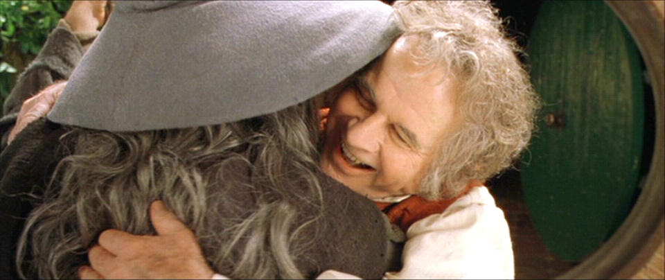

About Bilbo
Bilbo Baggins is an adventurous soul. He is also a good friend of Gandalf The Grey
Bilbo and his friend Gandalf
Bilbo's Characteristics
- He's a clever hobbit
- He's a good friend
- He's very brave
Bilbo's Friends
Bilbo is friend with Gandalf The Grey, a powerful wizard who has good intentions.
He is also very fond of his nephew Frodo, who shares a lot of the characteristics with his uncle.
He has a good heart and has always been there for Bilbo.